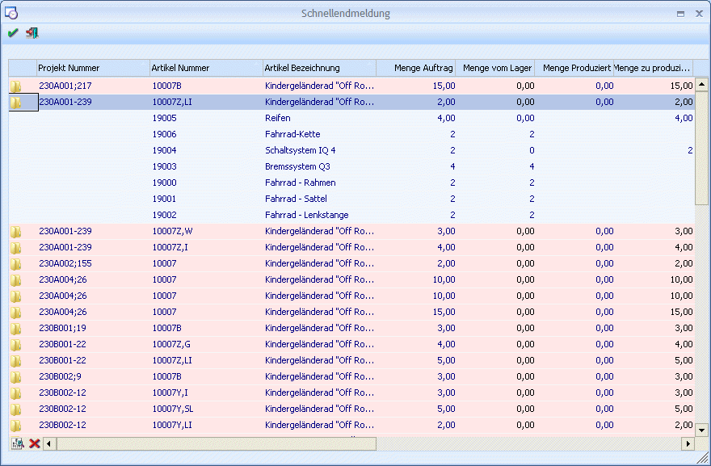

In diesem Fenster werden alle offenen Projekte lt. vorheriger Selektion angezeigt.

Gibt es bei einem Projekt auf der selben Ebene mehrere Produktionsartikel, so wird für jeden ein eigener Eintrag erstellt.
Folgende Spalten können bearbeitet werden:
Ø Ordnersymbol
In der ersten Spalte wird das Ordnersymbol dargestellt. Durch einen Doppelklick mit der Maus auf dieses Symbol, werden die zum Produktionsartikel zugehörigen Komponenten angezeigt.
Ø Menge vom Lager
Anzeige wie viele Stück vom Lager genommen werden sollen. Eventuell schon vorhandene Fertigprodukte werden nur dann vom Lager abgebucht, wenn die entsprechende Option in der Stückliste aktiviert ist.
Das Programm schlägt vor, die vorhandene Menge, maximal die Menge des Projektes (Auftrages) vom Lager zu nehmen. Diese Menge kann hier reduziert werden.
Ø Menge zu produzieren
Anzeige bzw. Eingabe der Menge, die nun gemeldet werden soll. Es wird vom Programm vorgeschlagen Menge Auftrag - Menge vom Lager - Menge produziert. Die Menge kann entweder erhöht oder reduziert werden.
Ø Kostenträger
Wurde in den PROD Parametern die Kostenrechnung aktiviert, so muss pro endgemeldeter Zeile ein Kostenträger eingetragen werden.
Ø Stapelnummer
Nach dieser Spalte kann die Tabelle auf- bzw. absteigend sortiert werden. Die Stapelnummer kann nicht in der Tabelle editiert werden. Um die Tabelle sortieren zu können werden alle Ordner in der Tabelle beim Öffnen des Fensters geschlossen.
Ø Wertaufschlag
Dieses Feld steht nur zur Verfügung wenn die Lizenz "Fremdfertigung Produktion" im System hinterlegt ist.
Das Feld wird automatisch mit dem Belegwert aus einer entsprechenden Fremdfertiger(Lieferanten)-Bestellung befüllt. Der Betrag stellt der Fremdfertigungs-Rechnungsbetrag welcher in Folge auf den Produktionsartikel-Wert aufgeschlagen werden soll. Somit setzt sich der fremdgefertigte Produktionsartikelwert aus der Summe der Materialien, der Summe etwaiger Ressourcen/Tätigkeiten und diesem Wertaufschlag zusammen.
Sollte es bei einem fremdzufertigenden Arbeitsschritt keinen Lieferantenbeleg (mehr) geben, wird hier der allgemeine Einkaufspreis aus dem Artikelstamm vorgeschlagen.
Wenn eine Lizenz "Fremdfertigung Produktion" vorhanden ist, kann ein Wertaufschlag auch bei nicht fremdzufertigenden Arbeitsschritten erfasst werden. Ein Wert wird allerdings nicht automatisch vorgeschlagen, da keine Fremdfertiger-Bestellung mit dem Arbeitsschritt verbunden ist.
Ø Wertaufschlag-Beschreibung
Dieses Feld steht nur zur Verfügung wenn die Lizenz "Fremdfertigung Produktions" im System hinterlegt ist.
Eine Beschreibung für den Wertaufschlag kann in diesem Feld vom Benutzer erfasst werden. Das Feld steht auch für nicht fremdzufertigende Arbeitsschritte zur Verfügung, wenn die Lizenz "Fremdfertigung Produktion" im System hinterlegt ist.
Ø OK-Button
Beim Druck des O.K.-Buttons werden folgende Punkte geprüft bzw. durchgeführt:
ü Es wird zuerst geprüft, ob in den PROD Parametern eingestellt wurde, dass Kostenrechnungszeilen geschrieben werden sollen. Ist dies der Fall, muss pro Zeile der Kostenträger eingegeben worden sein. Andernfalls stellt sich das Programm auf die fehlerhafte Zeile und es muss der fehlende Kostenträger eingetragen werden.
ü Wurde in den PROD Parametern eingestellt, dass eine Lagerstandsunterschreitung abgeprüft werden soll, wird bei einer eventuellen Unterschreitung die Endmeldung abgebrochen.
ü Wird in der Stückliste ein Ausprägungs(haupt)artikel verwendet, geht beim Speichern automatisch das Ausprägungsfenster auf und die entsprechende Ausprägung muss gewählt werden.
ü Wurden die obigen Kriterien erfüllt, wird das Projekt gespeichert:
ü Es werden pro Arbeitsschritt alle Ist-Zeiten verbucht.
ü Es werden die Komponenten vom Lager abgebucht und der Produktionsartikel mit der Summe aller Einstandspreise plus der Summe aller Arbeitszeiten auf das Lager zugebucht.
ü Es werden die Kostenrechnungszeilen in das Kore-Journal geschrieben.
ü Wenn es sich um einen Produktionsauftrag aus der Fakturierung gehandelt hat und die Ebene 0 produziert wurde, wird die noch zu liefernde Menge in den Ursprungsbeleg zurückgeschrieben.
ü Das Produktionsjournal wird ausgegeben, z.B. in den Spooler, wenn die Option "Endmeldungsjournal in den PPS-Parameter, Bereich "Ausgabe", aktiviert ist,
Ø Alle Ordner öffnen
Beim Druck dieses Buttons im unteren Teil der Tabelle werden alle Ordner in der Tabelle geöffnet. Dabei werden in der Tabelle die Stücklisten-Teile (Material) in der obersten Ebene des jeweiligen Produktionsauftrags angezeigt.
Ø Alle Ordner schließen
Beim Druck dieses Buttons im unteren Teil der Tabelle werden alle Ordner in der Tabelle geschlossen.
Hinweis:
Wurde in den PPS-Parametern als Rückfalls-Kostenstelle für Ressourcen (trotz Warnung) eine Verwaltungs- oder Hilfskostenselle hinterlegt, wird die Produktionsendmeldung mit einer Fehlermeldung abgewiesen und es wird kein Projekt endgemeldet.